Encontrás una receta increíble. La guardás. Y terminás cocinando lo de siempre.
El ramen que viste un domingo Guardado
La tarta del video de un minuto Guardado
El curry que te mandaron por mensaje Guardado
El postre para cuando vengan visitas Guardado
No es que te falten ideas. A veces, lo que falta es tenerlas a mano, organizadas y listas para usar.
El recetario
Una herramienta: abrís, elegís y cocinás.
Estas páginas no están pensadas para leerse de corrido. Recetas de distintos lugares del mundo, cocinadas y probadas, para que elegir tu próxima comida sea más fácil.
22 recetas por continente. Cuando una receta es una versión adaptada para una cocina doméstica, lo vas a ver aclarado en la misma página.
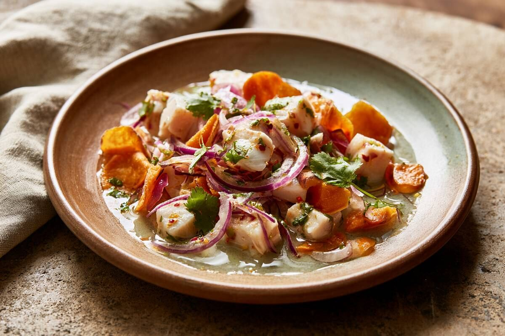
CevichePerúImagen ilustrativa
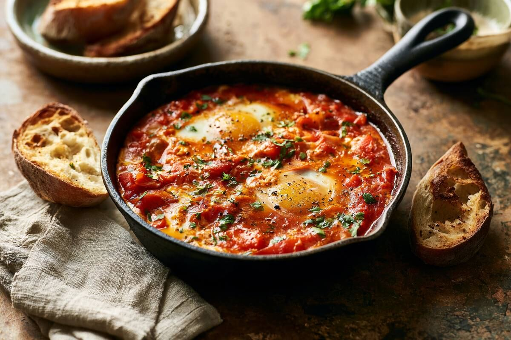
ShakshukaNorte de ÁfricaImagen ilustrativaBibimbapCoreaImagen ilustrativa
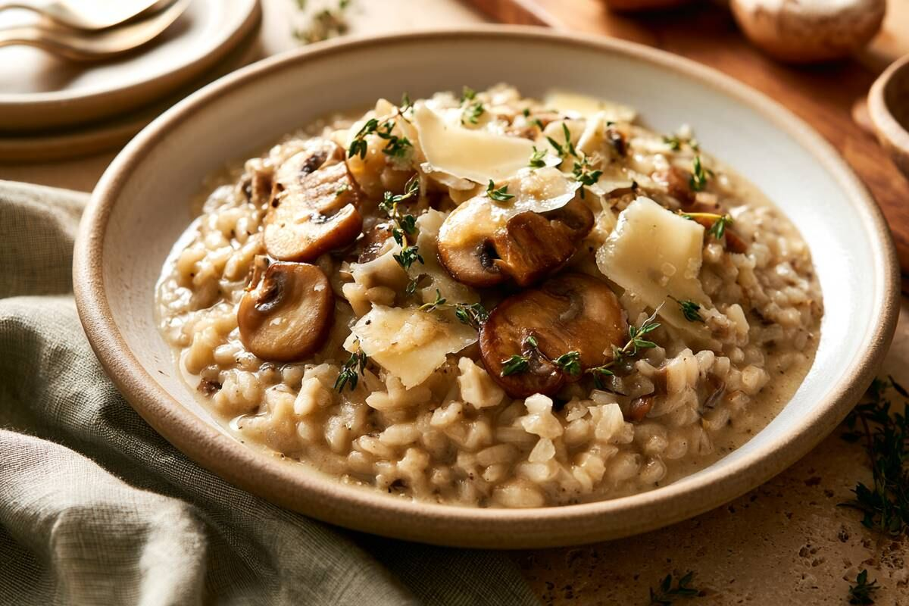
Risotto de hongosNorte de ItaliaImagen ilustrativaLomo saltadoPerúImagen ilustrativa
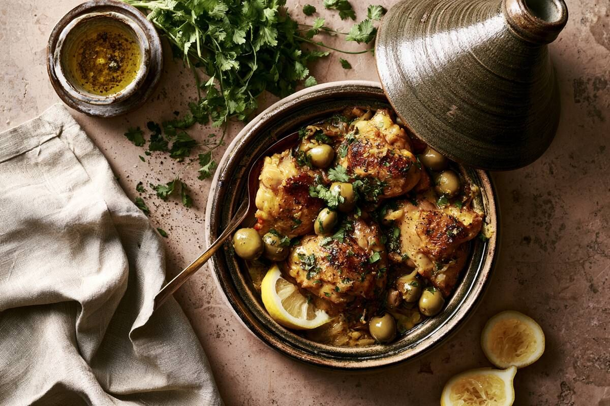
TajineMarruecosImagen ilustrativa
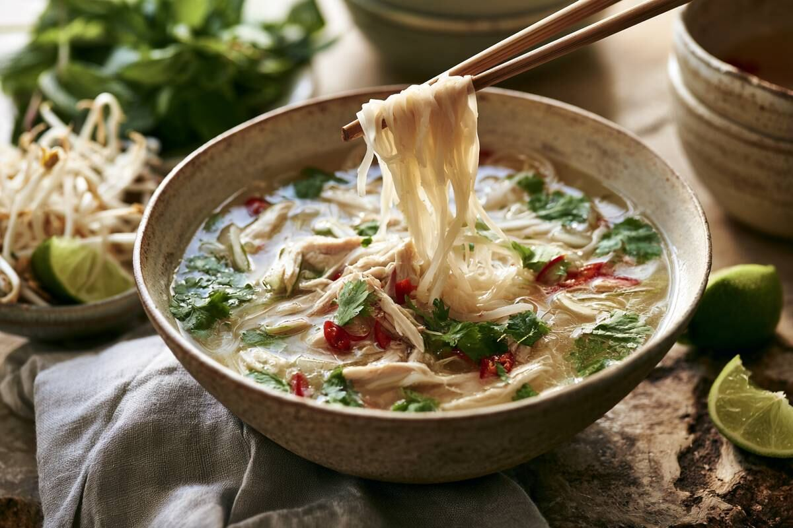
Imagen ilustrativa
Capítulo 01
Asia
Woks, vapores y boles: platos de fuego vivo donde lo dulce, lo ácido y lo picante conviven en el mismo bocado.
22 recetasPágs. 8–29
Tailandia · China · Corea · Japón · India · Norte de India · Pakistán · Indonesia · Vietnam · Filipinas · Malasia · Líbano · Levante · Irán · Nepal · Tíbet
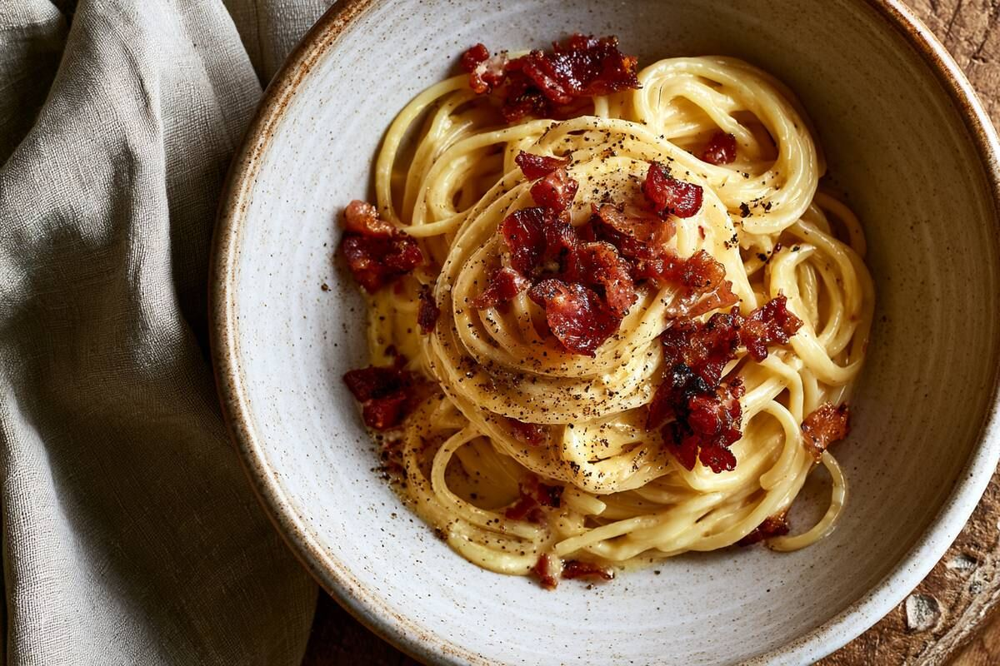
Imagen ilustrativa
Capítulo 02
Europa
Cocina de mercado y de sobremesa: pastas, guisos lentos, panes y postres que pasan de generación en generación.
22 recetasPágs. 31–52
Italia · Norte de Italia · España · Francia · Grecia · Polonia · Hungría · Ucrania · Portugal · Reino Unido · Irlanda · Suecia · Sur de Alemania · Austria
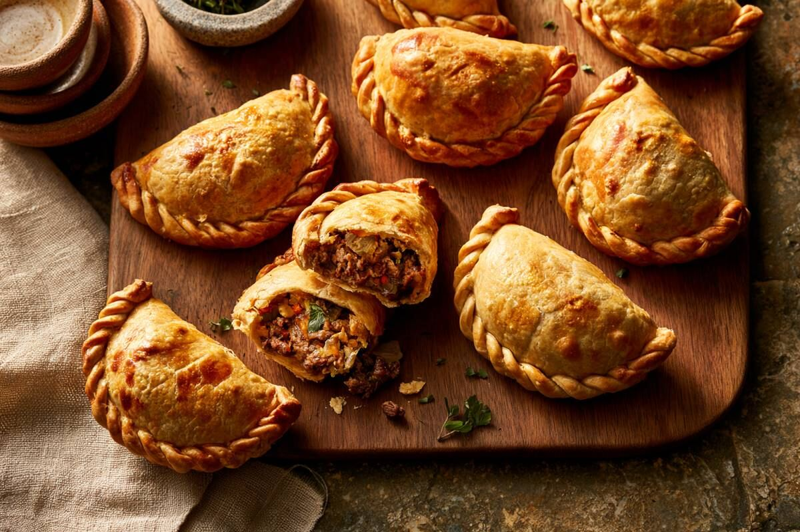
Imagen ilustrativa
Capítulo 03
América Latina
Maíz, papa, porotos y mucho para compartir. Recetas de olla grande, de domingo y de reunión.
22 recetasPágs. 54–75
Perú · México · Argentina · Región andina · Chile · Brasil · Venezuela · Colombia · Caribe · Cuba · Costa Rica · Nicaragua · El Salvador · Ecuador · Paraguay · Uruguay · América Latina
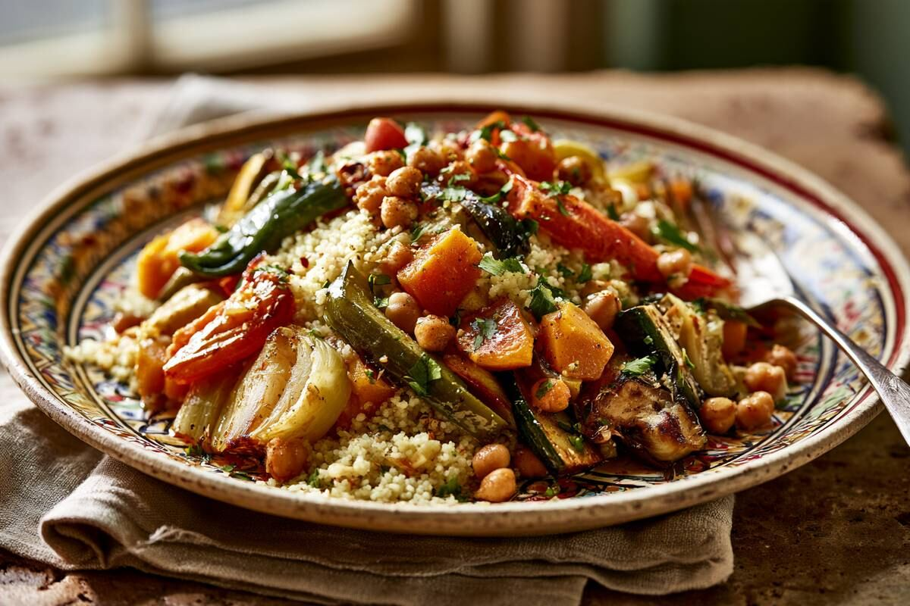
Imagen ilustrativa
Capítulo 04
África
Especias tostadas, guisos que se cocinan sin apuro y una despensa generosa en legumbres, maní y cítricos.
22 recetasPágs. 77–98
Norte de África · Marruecos · Egipto · África occidental · Nigeria · Senegal · Mali · Etiopía · Eritrea · Sudáfrica · Kenia · Tanzania · Zanzíbar · costa suajili · Mozambique · Angola
Guía rápida
Empezá por lo que te pasa hoy.
Así funciona la guía «¿Qué cocino hoy?» del recetario: elegís tu momento y vas directo a la página de la receta.
¿Tenés poco tiempo? Listas en menos de 30 minutos. Guía rápida, pág. 99
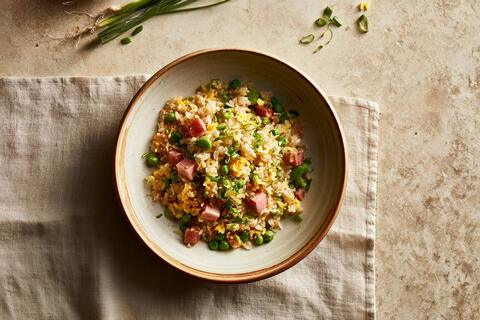
Arroz frito con huevo y arvejasYangzhou chao fanpágina pág. 9
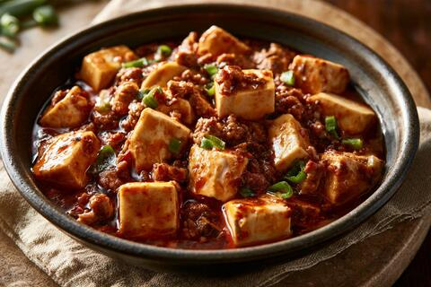
Tofu picante con carneMapo tofupágina pág. 10
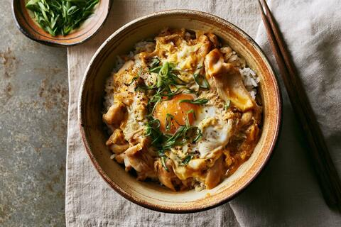
Bol de pollo y huevoOyakodonpágina pág. 12
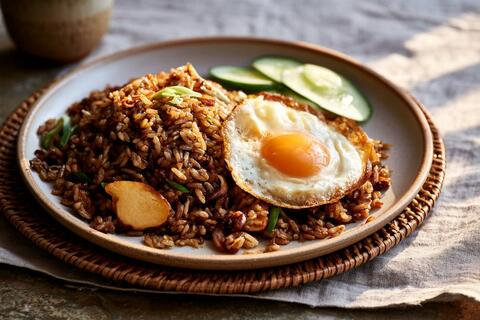
Arroz frito indonesioNasi gorengpágina pág. 17
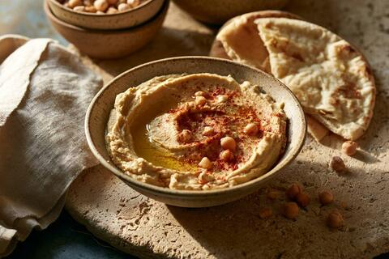
Crema de garbanzosHummuspágina pág. 25
Pasta a la carbonaraSpaghetti alla carbonarapágina pág. 31
Pago seguro con Hotmart · Garantía de 7 días antes de descargar el PDF
Imagen ilustrativa
Sobre SOPHIETASTE
Cocinar es una forma de demostrar cariño.
La energía y el amor con que cocinás se notan en el plato. Y sin embargo, hoy guardamos ideas de Instagram que nunca llegamos a hacer.
Un video de un minuto no te muestra cantidades ni tiempos, y hay que verlo diez veces para entenderlo. Por eso SOPHIETASTE hace recetarios: no pasan de moda, unen lo digital con el papel y son una inversión en tu cocina.
Hecho con cariñoTodas las recetas fueron cocinadas y probadas.
Completo, no a mediasCantidades, tiempos, alérgenos, consejo y sustitución en cada receta.
Digital y en papelLo leés en el celular y lo imprimís cuando lo querés en la cocina.
Vol.01
Imagen ilustrativa
Del guardado al plato · Volumen 01
Todo el recetario, en tu celular hoy.
88 recetas de 4 continentes, 22 por continente
Una página y una foto por receta
Índice visual con foto, etiquetas y enlaces
Guía rápida «¿Qué cocino hoy?»
Glosario de ingredientes entre países
Lista de compras y planificador semanal
PDF de 104 páginas, para el celular o para imprimir
Todas las recetas, cocinadas y probadas
Precio de lanzamiento
USD 6Pago único
Hasta el 31 de diciembre · Después, USD 10
🎁 De regalo con tu compra: Guía de despensa del mundo
Qué tener en casa para cocinar las 88 recetas sin salir corriendo al súper.
Pago seguro con Hotmart · El precio se muestra en tu moneda al pagar · Garantía de 7 días antes de descargar el PDF · Ver política de reembolso
Apenas se confirma el pago, Hotmart te envía un correo con el acceso al PDF. También lo encontrás en tu cuenta de Hotmart, en «Mis compras». Con tarjeta suele ser inmediato; con otros medios de pago puede tardar algunas horas.
¿En qué formato viene?
Es un PDF de 104 páginas. Se lee en el celular, la tablet o la computadora, y se puede imprimir.
No me llegó el correo o no puedo abrir el archivo. ¿Qué hago?
Revisá spam y promociones, y entrá a «Mis compras» en Hotmart con el correo que usaste. Si sigue sin aparecer o no abre, escribinos a sophieteayuda@gmail.com y lo resolvemos, sin importar cuándo compraste.
¿Tiene garantía?
Sí. Tenés 7 días desde la compra para pedir la devolución, siempre que todavía no hayas descargado el PDF. Lo pedís en refund.hotmart.com con el número de transacción de tu correo. Hotmart lo devuelve por el mismo medio de pago: la aprobación puede tardar hasta 7 días y, con tarjeta, el reintegro puede verse en el resumen actual o en el siguiente.